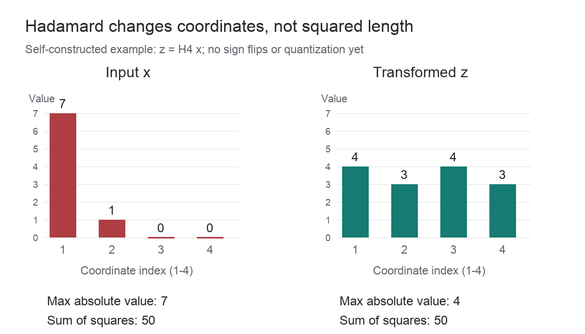

正文 1,369 字 · 约 5 分钟阅读
Hadamard Transform（哈达玛变换）在量化中用于改变数值的坐标分布，目标是减轻少数异常大值对低精度表示的影响。权重是模型中可学习的参数，激活是计算产生的中间数值；对它们先做变换，再做低精度近似，是两个分开的操作。数学上的 Hadamard 变换不做量化舍入或裁剪，通过与权重配对变换，量化前可以保持原计算。
设 $d$ 为向量维度，$A_d$ 为一个 $d\times d$ 的矩阵，元素取正负一，各行互相正交。它满足 $A_dA_d^\top=dI$，其中 $I$ 是单位矩阵。未归一化的 Hadamard 矩阵 $A_d$ 不是保长度的变换；乘上归一化因子得到 $H_d=A_d/\sqrt d$，才有 $H_d^\top H_d=I$。量化语境中的正交 Hadamard 通常指后者。
对列向量 $x$ 做变换 $z=H_dx$，得到的每个坐标都是原坐标的一种带正负号的和，再除以 $\sqrt d$。$z$ 与 $x$ 的欧氏长度相同，原向量可用 $x=H_d^\top z$ 恢复。这里的 Hadamard Transform 不同于 Hadamard product：后者是两个数组对应元素相乘，不混合坐标。
取一组四维正交的正负号行，定义
$$ A_4=\begin{bmatrix} 1&1&1&1\\ 1&-1&1&-1\\ 1&1&-1&-1\\ 1&-1&-1&1 \end{bmatrix},\qquad H_4=\frac12 A_4. $$
用 $\|\cdot\|_2$ 表示欧氏范数，即各坐标平方和的平方根；保长度来自
$$ \|H_4x\|_2^2=x^\top H_4^\top H_4x=x^\top x=\|x\|_2^2. $$
对多个坐标共用步长的对称均匀量化，设 $s$ 是步长，$M$ 是这一组坐标的最大绝对值，$q_{\max}$ 是整数网格的正端点，取 $s=M/q_{\max}$。离群值把 $M$ 拉大时，正常值之间的差别可能小于一个步长，舍入后就无法区分。位宽不变时，缩小变换后这一组的最大绝对值，才可能让网格变细。
若大值只集中在一个坐标，Hadamard 会把它的贡献分到所有输出坐标；多个输入坐标则可能互相抵消，也可能叠加。混合改变的是大值相对于其他坐标的大小，不是向量的总长度。
随机化 Hadamard 在混合前加一次符号翻转：令 $D=\operatorname{diag}(\varepsilon_1,\ldots,\varepsilon_d)$，$\varepsilon_i$ 是各自独立、等概率取正负一的随机符号，$\operatorname{diag}$ 表示以这些数为对角元素的矩阵；采用 $R=H_dD$，先算 $Dx$ 再算 $H_d(Dx)$。$R$ 仍然正交，不过它的逆是 $R^\top=DH_d^\top$，不能默认仍按原顺序计算。
每个 $h_{ji}^2=1/d$，于是
$$ \mathbb E[z_j^2]=\sum_{i=1}^d h_{ji}^2x_i^2=\frac{\|x\|_2^2}{d}. $$
在带有小数值的算例里，变换后用同一位宽量化，逆变换后的总平方误差更小，但仍然非零。峰值下降改善了这组数的网格分辨率，没有消除舍入。
反量化得到 $\hat z=s'q'=(4,8/3,4,8/3)^\top$，$\hat z$ 表示还原到变换坐标的近似值；再逆变换，得到原坐标的近似值 $\tilde x$：
$$ \tilde x=H_4^\top\hat z=(20/3,4/3,0,0)^\top. $$

线性层把输入乘以权重矩阵，再加偏置。用列向量约定：$x$ 为输入，$W$ 为权重矩阵，$b$ 为偏置，$y=Wx+b$ 为输出。输入改成 $z=Rx$ 后，权重也要改成 $W'=WR^\top$；$R$ 是固定的正交变换。量化前、实数运算下有
$$ W'z+b=Wx+b. $$
只变换输入却继续使用原权重，算到的不是同一个线性层。
权重固定时，可以在推理前先算出变换后的权重，再对它量化；推理指用训练好的参数计算输出。需要在线变换的输入，则在运行时先经过 Hadamard，再量化、再矩阵乘。
设 $\widehat W'$ 为量化后还原出的近似权重，$\hat z$ 为近似输入，实际计算的是 $\hat y=\widehat W'\hat z+b$，$\hat y$ 表示近似输出。输入和权重都可能带误差，所以配对的正交性质不等于低精度输出无损。若重新选择随机符号，必须同步更新配对权重，否则量化前的等式也不成立。
维度 $d=2^n$ 时，$n$ 为非负整数，可以使用递归构造的 Hadamard 矩阵，这种二次幂阶数的构造称为 Walsh-Hadamard。每次把一对数 $u,v$ 换成 $u+v,u-v$，再逐级扩大配对范围，最终统一乘上 $1/\sqrt d$。这是对未归一化正负号矩阵的快速乘法，不需要先存出完整矩阵。
普通稠密矩阵乘向量的每个输出坐标需要对 $d$ 个输入做乘加，共有 $d$ 个输出，所以需要 $O(d^2)$ 次运算。
快速 Hadamard 有 $\log_2 d$ 级，每级处理整个向量，运算量为 $O(d\log_2 d)$。
对二次幂阶数，令 $A_1=[1]$，未归一化矩阵可按
$$ A_{2m}=\begin{bmatrix}A_m&A_m\\ A_m&-A_m\end{bmatrix} $$
递归构造，$m$ 表示当前矩阵阶数。矩阵每扩大一倍，就增加一级和与差。
from math import sqrt
def hadamard(values):
data = [float(value) for value in values]
size = len(data)
if size == 0 or size & (size - 1):
raise ValueError("length must be a positive power of two")
half = 1
while half < size:
for start in range(0, size, 2 * half):
for offset in range(half):
left = start + offset
right = left + half
u, v = data[left], data[right]
data[left], data[right] = u + v, u - v
half *= 2
return [value / sqrt(size) for value in data]
x = [7, 1, 0, 0]
z = hadamard(x)
print("transform:", z)
print("inverse:", hadamard(z))
weights = [1, 2, 0, 0]
rotated_weights = hadamard(weights)
original = sum(w * value for w, value in zip(weights, x))
rotated = sum(w * value for w, value in zip(rotated_weights, z))
assert abs(original - rotated) < 1e-12
print("outputs:", original, rotated)transform: [4.0, 3.0, 4.0, 3.0]
inverse: [7.0, 1.0, 0.0, 0.0]
outputs: 9 9.0正交变换保证的是长度和内积，不是任意输入的最大坐标下降。固定 Hadamard 也可能把原本等大的坐标合成一个大值；随机符号的期望性质同样不保证每次都减小峰值。因此量化误差是否下降，要结合实际输入、共享步长的范围和舍入结果判断。
配对式不能穿过任意非线性运算。若中间操作逐坐标改变数值，一般不能把原式中的输入直接换基，再把逆变换吸收到另一侧权重；必须在确实能抵消的位置插入成对变换。
二次幂维度的快速实现不能直接处理任意长度。非二次幂阶数的 Hadamard 矩阵是否存在并无普遍保证，需另行核对结构。
在线 Hadamard 是新增的运算，不会因为权重预先变换就自动消失；输入变换以高精度执行，部署时还需计算这部分开销。
理论配对式按实数运算成立，浮点执行时有限精度加减仍可能产生舍入误差，这与把变换后数值量化到整数网格的误差不同。